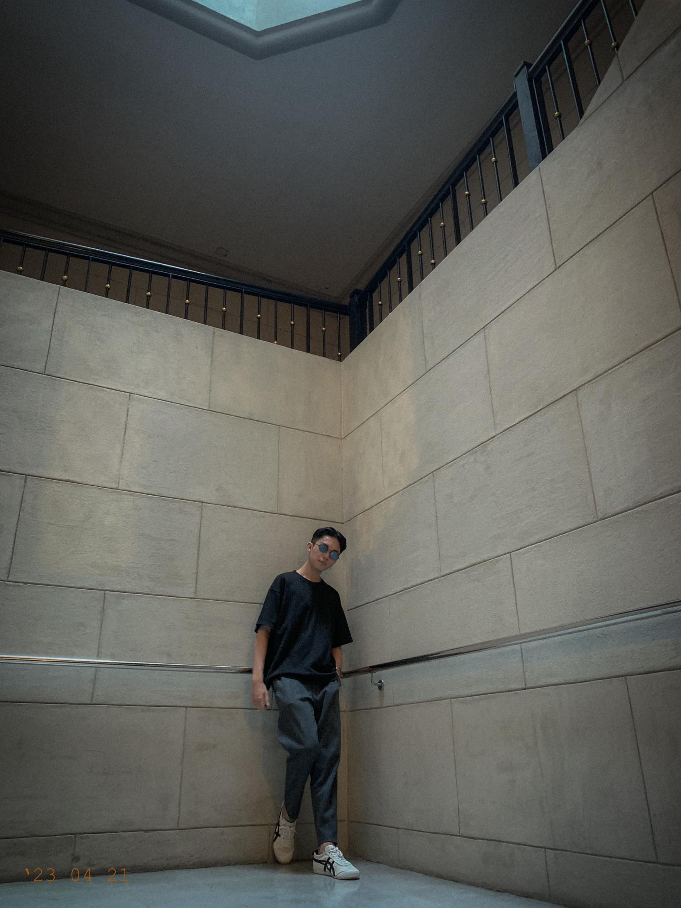

Nickname: G
Age: 20 | Birthdate: October 19, 2003
Senior High School Graduated From: Paco Catholic School
City: [City Name]
Course: BSIT
Scholarship: [Yes / No]
Yes
Did you choose this course? [Yes / No]
If Yes, Why: I chose this course because it has more opportunities when it comes to job hiring and the salary is high.
If No, What course would you choose?: Tourism
I.T. Experience: Programming / Gaming / Others: I have no experience. Because I am from ABM student before.
Hobbies / Interests: Valorant, gym, badminton, music, Spotify, watching series and movies.
What do you expect to learn from this course (Web Programming)?: I expect to learn how to create a secure website.
What do you want to learn to help you in your chosen Major?: Basic coding of the website.
Goals in life: To graduate and have a well-paid job and to travel.
Dream: To have my own house, car, and to travel the world.
Any other interesting aspects of your life that you would like to share: For now, nothing.